Galeri 12 Tokoh Utama
Sumbangan besar barisan pemimpin dan pahlawan dalam lipatan kronologi negara kita.
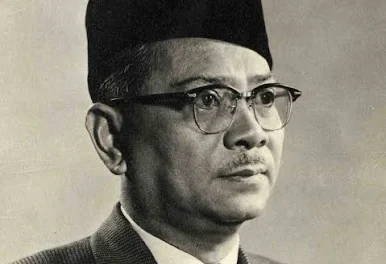
Tunku Abdul Rahman
Bapa Kemerdekaan dan Perdana Menteri Malaysia yang pertama mengetuai delegasi merdeka ke London.
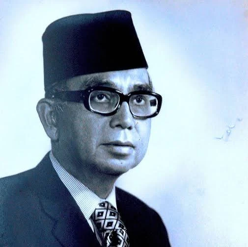
Tun Abdul Razak
Perdana Menteri Malaysia yang kedua dan arkitek pembangunan transformatif luar bandar.
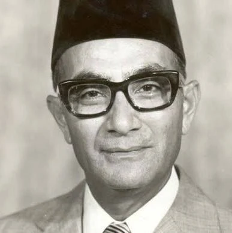
Tun Hussein Onn
Perdana Menteri Malaysia yang ketiga dan merupakan bapa perpaduan pentadbiran berintegriti.
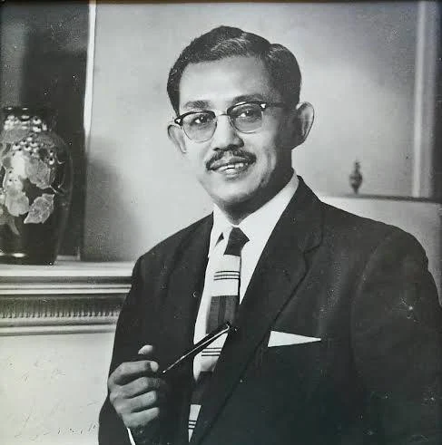
Tun Dr. Ismail
Wira ekonomi negara dan juga merupakan mantan Timbalan Perdana Menteri Malaysia yang tegas.
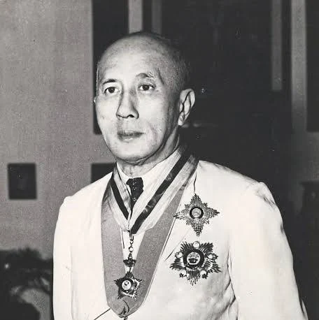
Tun Tan Cheng Lock
Pengasas MCA dan pejuang hak kemasyarakatan serta pendidikan integrasi masyarakat Cina.
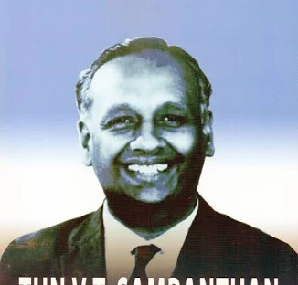
Tun V. T. Sambanthan
Pemimpin utama masyarakat India dan tokoh penting penyatuan kaum era kemerdekaan.
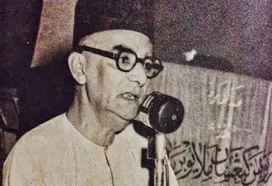
Dato' Onn Jaafar
Pengasas awal UMNO dan penggerak utama pejuang penyatuan serta perpaduan bangsa Melayu.
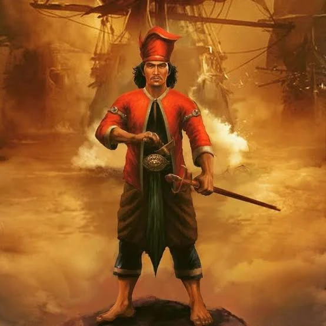
Hang Tuah
Pahlawan legenda maritim Melayu yang amat setia kepada institusi Kesultanan Melayu Melaka.
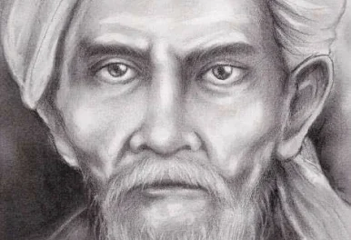
Tok Janggut
Pejuang gagah perkasa rakyat Kelantan yang bangkit menentang pengenalan sistem cukai British.

Mat Kilau
Pahlawan handal Pahang yang gigih melancarkan penentangan sengit gerilya menentang British.
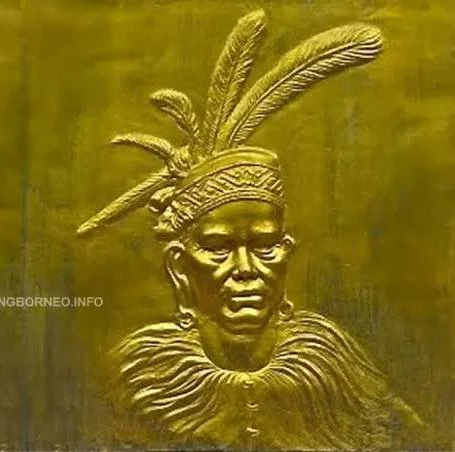
Rentap (Libau)
Pahlawan Iban terkemuka Sarawak yang menentang pemerintahan berat sebelah Rajah James Brooke.
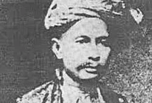
Dol Said
Penghulu Naning Melaka yang berani melancarkan Perang Naning menentang bayaran ufti British.
Garis Masa Sejarah Interaktif
Klik pada mana-mana tahun di bawah untuk melihat evolusi sejarah tanah air kita secara langsung!
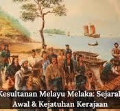
Titik bermulanya era kolonialisme di Tanah Melayu. Angkatan tentera Portugis di bawah pimpinan Alfonso de Albuquerque melancarkan serangan hebat dan berjaya menawan pelabuhan kosmopolitan Kesultanan Melayu Melaka, memaksa Sultan Mahmud Shah berundur.
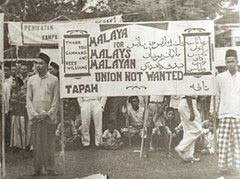
British memperkenalkan gagasan Malayan Union yang menghapuskan kedaulatan Raja-raja Melayu dan memberikan hak kerakyatan longgar. Hal ini mencetuskan demonstrasi aman besar-besaran di seluruh ceruk semenanjung dan menyaksikan penubuhan UMNO di bawah Dato' Onn Jaafar untuk menyatukan suara rakyat.
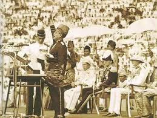
Selepas melalui siri perundingan meja bulat di London, Persekutuan Tanah Melayu mencapai kemerdekaan mutlak daripada belenggu penjajahan British. Laungan "MERDEKA!" sebanyak 7 kali oleh Tunku Abdul Rahman di Stadium Merdeka bergema megah sebagai tanda sebuah negara berdaulat baru dilahirkan.
Penyatuan wilayah geografi yang lebih besar berlaku apabila Persekutuan Tanah Melayu, Sabah, Sarawak, dan Singapura bergabung untuk menubuhkan negara persekutuan Malaysia yang serba baharu pada 16 September 1963 demi keselamatan, kestabilan geopolitik, dan kemakmuran ekonomi serantau.
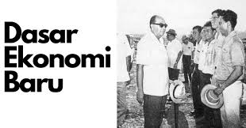
Ekoran peristiwa rusuhan kaum 13 Mei 1969, kerajaan di bawah Tun Abdul Razak mengisytiharkan ideologi kebangsaan Rukun Negara untuk memupuk perpaduan erat, disusuli pelancaran Dasar Ekonomi Baru (DEB) bagi menyusun semula masyarakat dan membasmi kemiskinan tanpa mengira kaum.